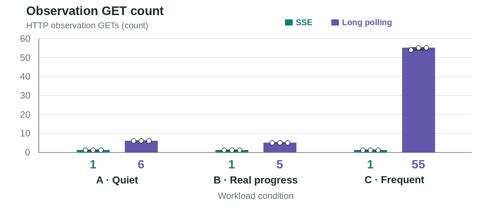
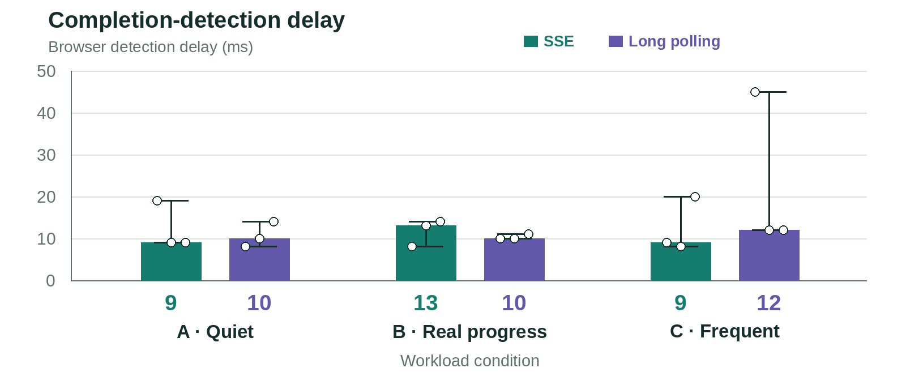

Server-Sent Events compared with long polling
I added Server-Sent Events (SSE) to ImageLab and compared it with long polling. SSE can deliver several job updates through one open response. Long polling starts another request after each response. Both watch the same image-processing job; neither performs the processing.
For condition A, I expected SSE to keep one stream during a 30-second quiet period, while long polling could time out and request again. For B, I expected both methods to deliver real progress quickly. For C, I expected SSE to use fewer requests during frequent updates. I did not assume that fewer requests would mean lower total resource use.
I used three conditions: A held an active job quiet for 30 seconds before real processing; B processed the three real image variants; C sent labelled simulated updates every 200 ms for 10 seconds, then did real processing. Simulated steps were separate from the number of stored variants.
There were 18 runs: three repetitions for each method in each condition. The selected runs used the same image and settings, one observer, and an empty queue at the start. I alternated method order. Counts cover the whole observation period and exclude the upload POST.
Detection delay was browser receipt time minus the server time recorded just after completion was saved. Processing duration was measured separately, from the worker starting to the recorded finish time. Browser and server ran on the same computer.
| Condition | Method | GETs | Detection delay (ms) |
|---|---|---|---|
| A | SSE | 1 [1–1] | 9 [9–19] |
| A | Long polling | 6 [6–6] | 10 [8–14] |
| B | SSE | 1 [1–1] | 13 [8–14] |
| B | Long polling | 5 [5–5] | 10 [10–11] |
| C | SSE | 1 [1–1] | 9 [8–20] |
| C | Long polling | 55 [54–55] | 12 [12–45] |
Values are medians; brackets show minimum–maximum. The complete 18-run table and raw client/server logs are included in evidence/measured-suite/.
In both graphs, columns show medians, circles show all three repetitions, and whiskers show minimum–maximum. Teal is SSE; purple is long polling.

Figure 1. SSE used one observation GET in every run. Long-polling medians were 6, 5 and 55 for A, B and C. The large increase in C is easier to see in the graph than in the table. The smaller A/B values are labelled directly.

Figure 2. Both methods detected completion quickly. SSE had lower median delays in A and C, but long polling had the lower median in B. The 45 ms long-polling result in C shows why the individual runs and ranges matter.
The graphs use the same recorded values as the summary and run tables. Processing duration is not included in detection delay.
My prediction about request counts was supported. SSE used one stream even when updates were frequent, while long polling sent a new GET after responses. The results did not show that SSE was always faster: in B, its median detection delay was 13 ms compared with 10 ms for long polling. I would not treat a few milliseconds in this small local test as a general speed advantage.
Some intermediate versions were skipped. For example, C–SSE–1 received 54 distinct versions between version 1 and version 56, missing versions 15 and 16. The completed snapshot still arrived. These responses describe current state rather than a history of every change, so a version gap alone does not mean the stored result was lost.
SSE still holds a server handler and subscriber, reads the database and sends events and heartbeat comments. In C, median observation reads were 56 for SSE and 110 for long polling. The median SSE stream lasted 10.709 seconds, with one heartbeat and a peak of one active handler. These values describe one observer; I did not measure total CPU, memory, TCP connection counts or large-scale capacity.
The runs were recorded on 8 November 2026 using headless Firefox on a local connection. A visible foreground-browser rerun is still outstanding. The data also predates the final event-format fixes and the change that records receipt time after decoding in both modes. In the recorded build, SSE stamped receipt before parsing, while long polling stamped it after decoding. I have kept the original measurements instead of presenting them as new results.
A computer-clock problem affected an original C attempt. I excluded that attempt and repeated all six C runs. The selected dataset combines the original A/B runs with the repeated C runs; the selection note and excluded records are retained. With only three repetitions per group, these findings should be read cautiously.
I would use SSE when an application needs regular progress updates over an open response. I would keep long polling available where ordinary request/response handling is more convenient. The main benefit shown here is fewer observation requests, especially with frequent updates, rather than a guaranteed improvement in speed or total resource use.
Reproduction: use assessment3/README.md and experiment.py in the ImageLab project. Tables and raw records are under evidence/measured-suite/. These are performance results; the later classroom interruption and failed-job checks are separate demonstrations.